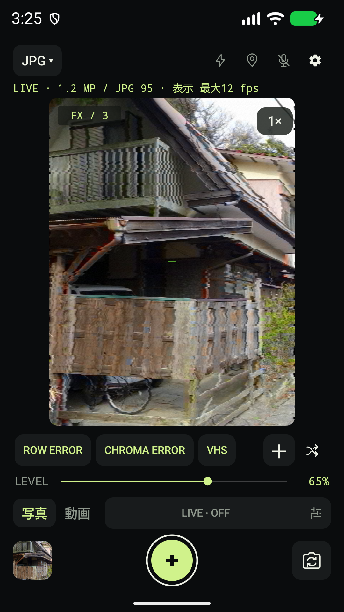
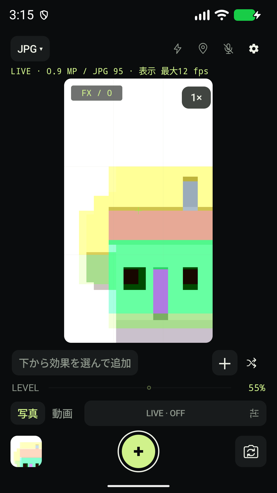
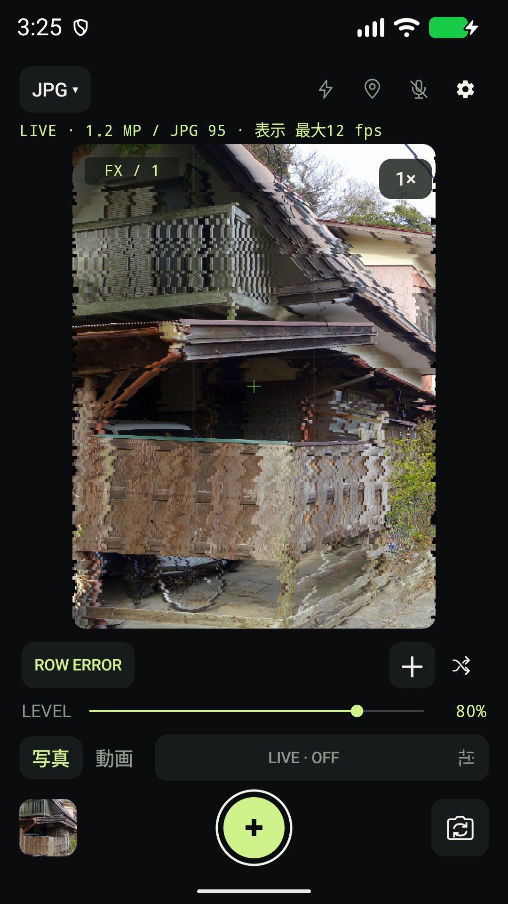

故障を組み合わせる。
FAULTを選び、LEVELで強さを調整。ランダムなら、組み合わせと調整値をまとめて試せます。詳細設定では、個々の故障をさらに調整できます。
ROW ERROR→CHROMA ERROR→VHS
GLITCH CAMERA / ANDROID
光が画像になる、その途中を壊す。
画素の欠け、色のずれ、テープのにじみ。
故障を重ねて、自分だけのカメラに。
Android 12以降 ／ 写真・動画 ／ アカウント不要
Google Playで公開中 日本・台湾・アメリカ・カナダ

01 / THE IMAGE
ひとつ加える。いくつか重ねる。
目の前の景色から、思いがけない像を見つける。

故障を加える前の色と輪郭。

画像の読み出しをずらし、行ごとに崩す。
ビットの反転に、行のずれとVHSの質感を重ねる。
作例・画面は1.3.1開発版です。現在の操作画面とは一部異なります。開発者が撮影した同じ写真をエミュレーターのカメラ入力に使い、アプリで処理しています。CHAINの作例は詳細設定で故障を強くしたものです。
02 / YOUR CAMERA
エフェクトを選ぶところから。
気に入ったら、もう少し深く。
FAULTを選び、LEVELで強さを調整。ランダムなら、組み合わせと調整値をまとめて試せます。詳細設定では、個々の故障をさらに調整できます。
同じ組み合わせでも、ノイズや一時的な故障は時間とともに変化します。LIVEでは変化の速さや端末入力との連動を調整。好みの瞬間を写真に、移り変わりを動画に残せます。
SEEDで壊れ方の個性を指定。RESEEDで別の個性を試せます。
写真に記録されたエフェクト設定を、次の撮影へ。自分の写真でも、受け取った写真でも。気に入った一枚が、新しい撮影の出発点になります。
設定の受け渡しには元の写真ファイルを共有してください。再圧縮などで記録情報が失われる場合があります。設定は確認して適用したときに変わり、元の写真は変更されません。
03 / INSIDE THE SIGNAL
故障は信号の流れに沿って重なります。
選ぶ順番を気にせず、組み合わせられます。
STREAM ERRORのAnalog FPVでは、受信の乱れを思わせる帯や、流れる色ノイズを調整できます。NETWORK DISPLAYを含め、実際の通信を乱す機能ではありません。
エフェクトを詳しく読む ↗04 / A LITTLE FURTHER
JPEGとMP4で、加工した像を保存。対応端末ではDNGのRAW写真や、実験機能のRAW動画も選べます。RAWの結果はプレビューと同一ではありません。
設定でPRO撮影モードをONにすると、対応する露出・ISO・ホワイトバランス・フォーカスを調整できます。端末が公開しているカメラレンズも選べます。
実験機能のTAPで、写真や動画を素材として読み込み、故障を加えられます。動画素材の音声も保存できます。利用できる形式は端末によって異なります。
ON YOUR DEVICE
画像処理と保存は端末内で。アカウント登録、広告、利用状況の解析機能はありません。写真や動画を開発者へ自動送信することもありません。
位置情報の記録とマイク録音は初期OFF。不具合報告用の診断情報も、内容を確認し、必要なときだけコピーできます。OSや写真アプリのクラウド同期は、それぞれの設定に従います。
プライバシーポリシー ↗AVAILABLE ON GOOGLE PLAY
5igna1 / Android 12以降
Google Playで入手配信地域：日本・台湾・アメリカ・カナダ
価格と端末の対応状況はGoogle Playでご確認ください。
日本語・英語・簡体字中国語に対応。
RAW・レンズ・解像度など、利用できる機能は端末によって異なります。